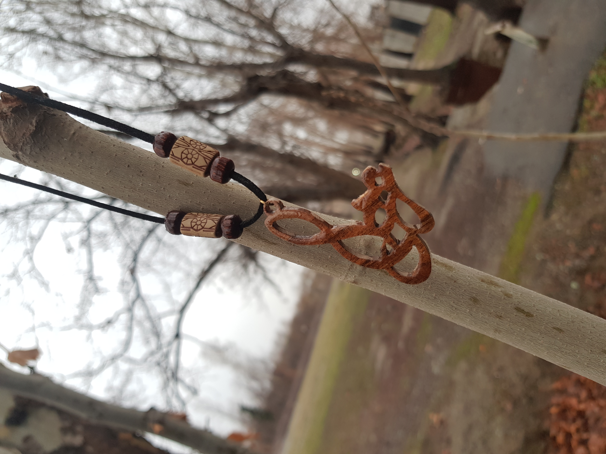
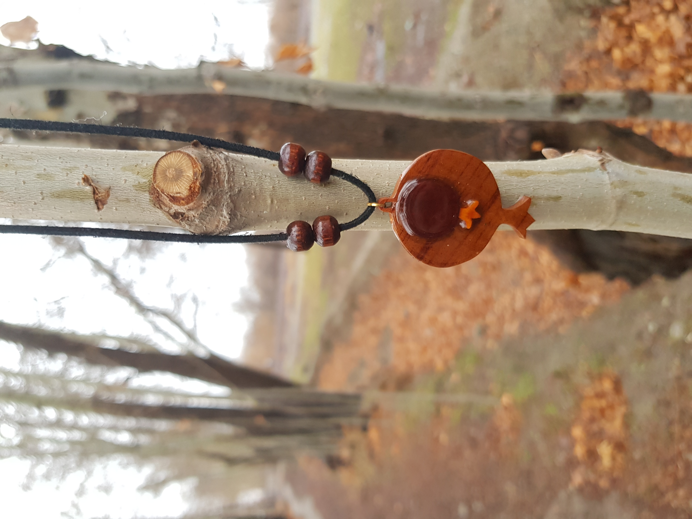
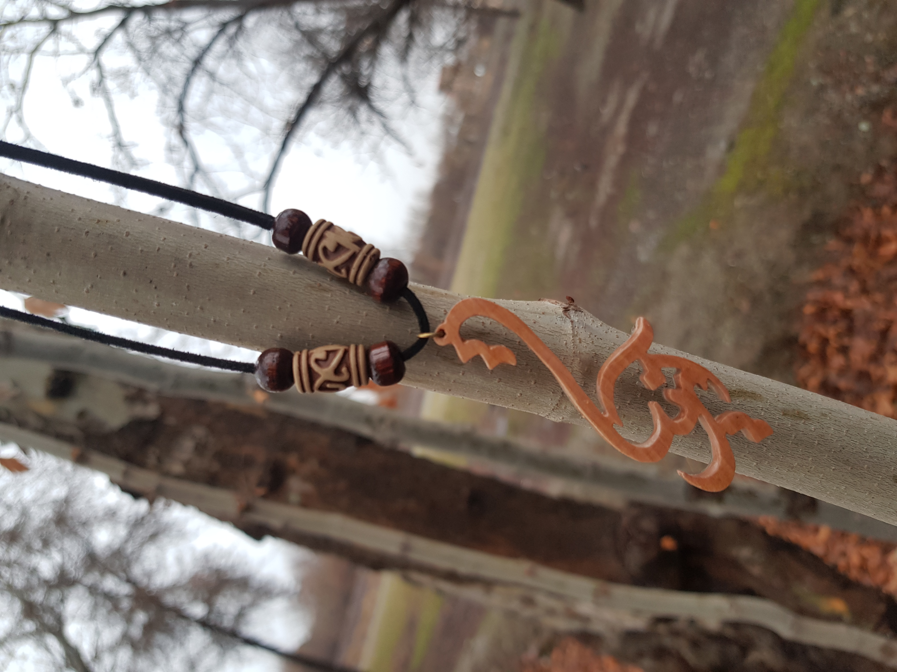
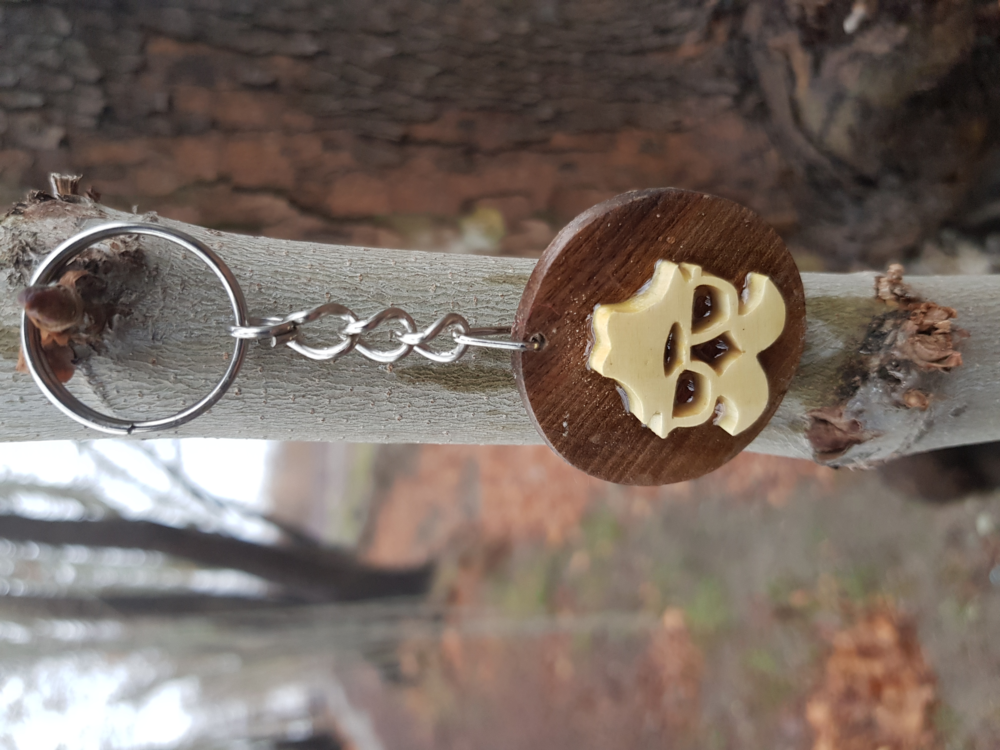

معرق هنر جایگزینی قسمتهای مختلف یك طرح با چوبهای رنگی و تلفیق آنها با یكدیگر برای آراستن سطح یك تابلو و یا دیگر زیر ساخت ها ی چوبی می باشد .هرچند سرآغاز پیدایش هنر معرق چوب نا مشخص است اما به نظر می رسد كه كشور هندوستان زادگاه اصلی این هنر باشد اصل هنر معرق چوب در ایران برگرفته از هنر كاشی معرق است كه از اواخر دوره ایلخانیان و بعد از دوره تیمور یان پدید آمده است معرق در لغت به معنی شاخه شاخه می باشد




سایت کامل نشده